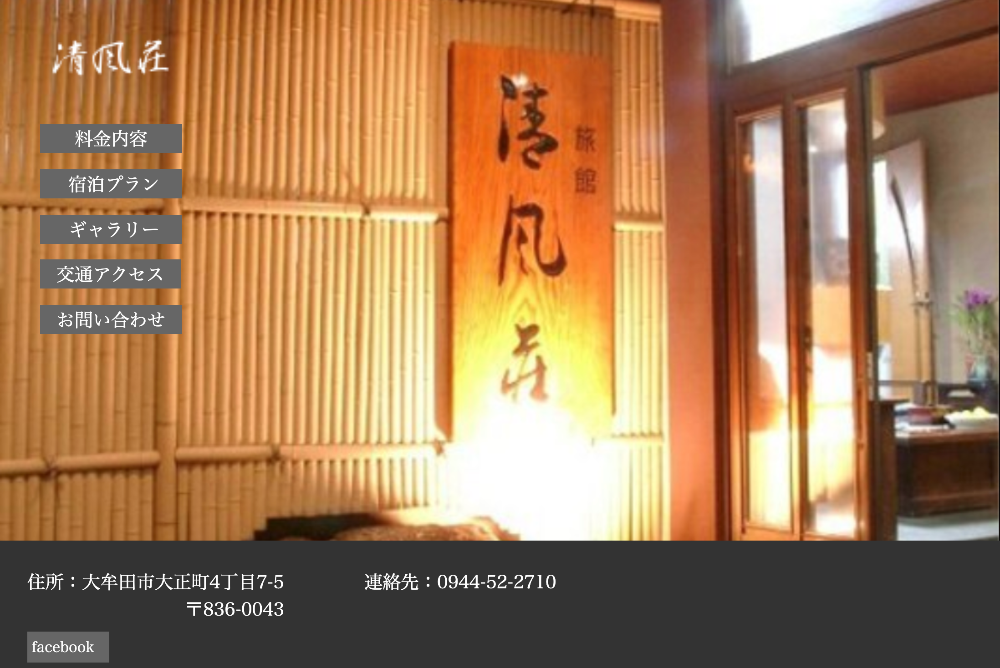
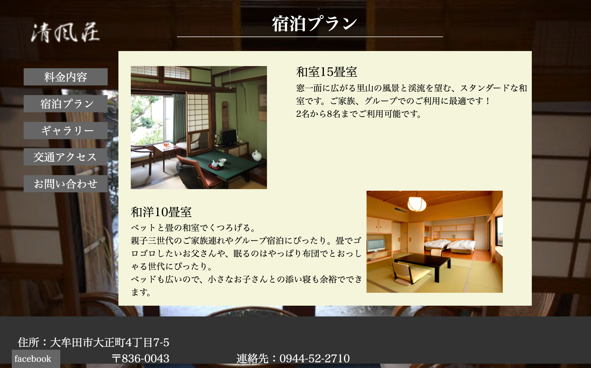
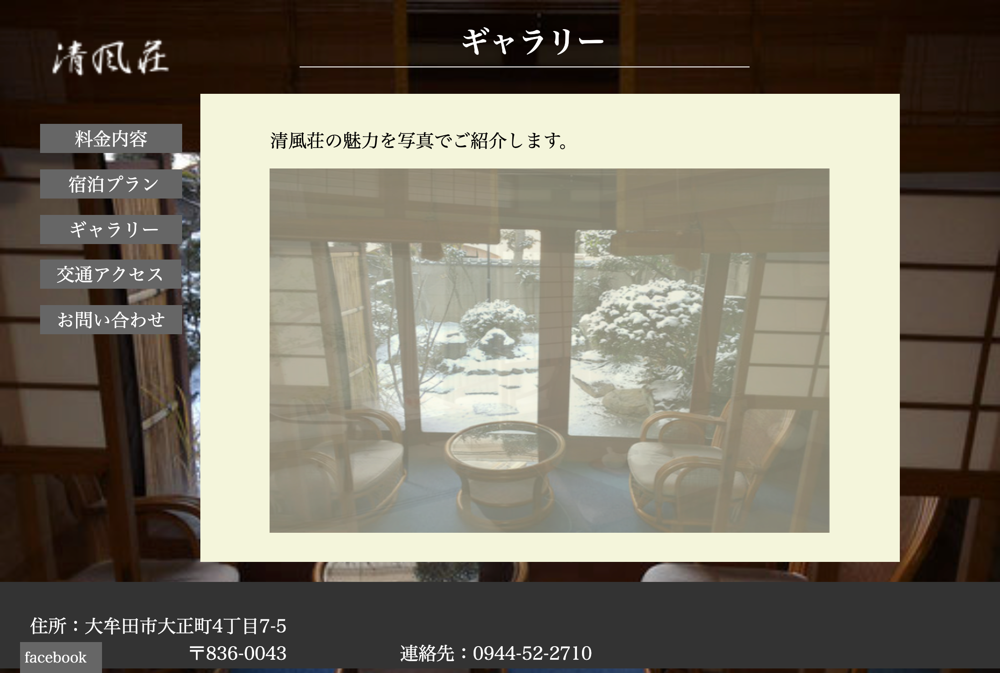
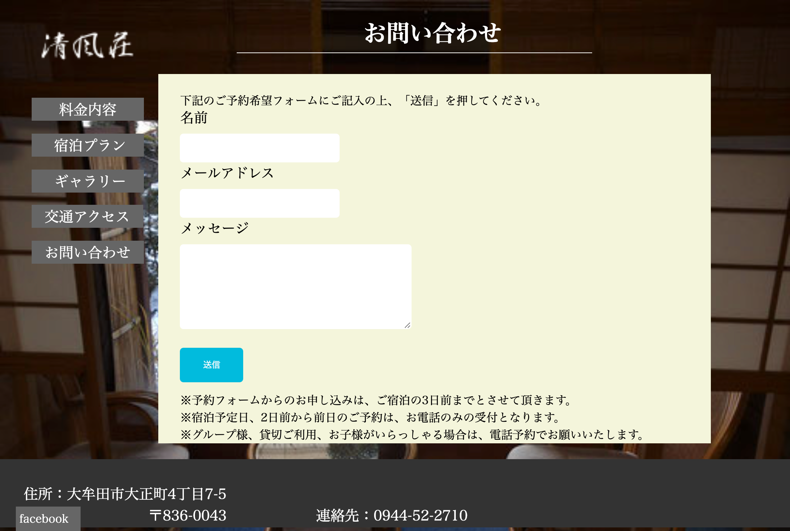
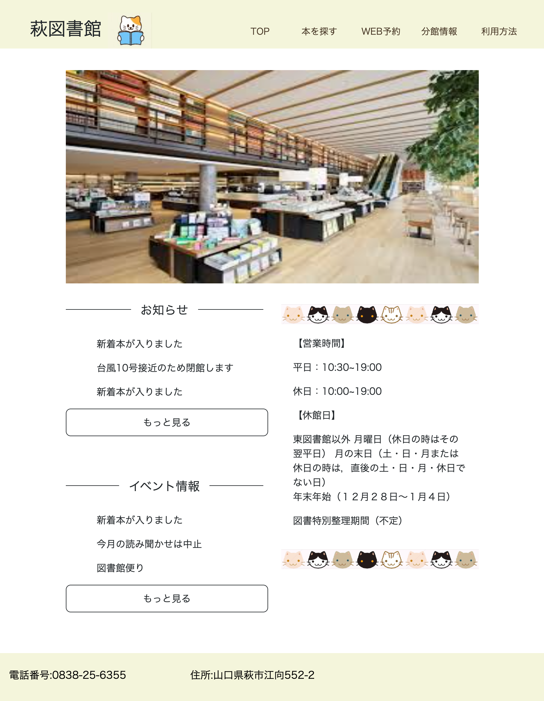
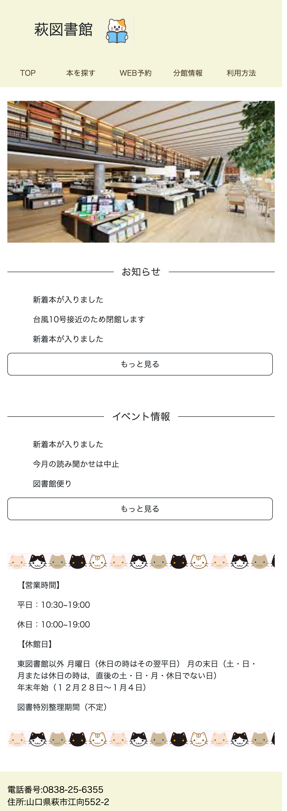

旅館サイト
- 
- 
- 
| 期間 | 1ヶ月 |
|---|---|
| プロジェクト内容 | 旅館サイトのリデザイン |
| どのような点を工夫したか | html/cssの学習をし、一番最初に作成したサイトです。工夫した点はシンプルかつシック風に作成し、和風旅館らしさを意識しました。 |
| 開発環境 | html/css |
| github | リンク |
| 元のサイトのリンク | リンク |
図書館サイト
- 


| 期間 | 1ヶ月 |
|---|---|
| プロジェクト内容 | 図書館サイトのリデザイン |
| どのような点を工夫したか | 元のサイトではどこに何があるのかわからず、どう触ればいいのかわかりませんでした。そのためできる限り少ない情報でわかりやすく、見やすいサイトにしようと心がけました。 |
| 開発環境 | html/css bootstrap jquery |
| github | リンク |
| 元のサイトのリンク | リンク |
公園サイト
| 期間 | 2ヶ月 |
|---|---|
| プロジェクト内容 | 公園サイトのリデザイン |
| どのような点を工夫したか | javascriptを使いパララックスを利用することを意識しました。季節ごとに色を変え、スクロールする度にワクワクさせるようなサイトにしました。またAPIを利用し、公園付近の天気を表示させました。 |
| 開発環境 | html/css,jquery,bootstorap |
| github | リンク |
| 元のサイトのリンク | リンク |